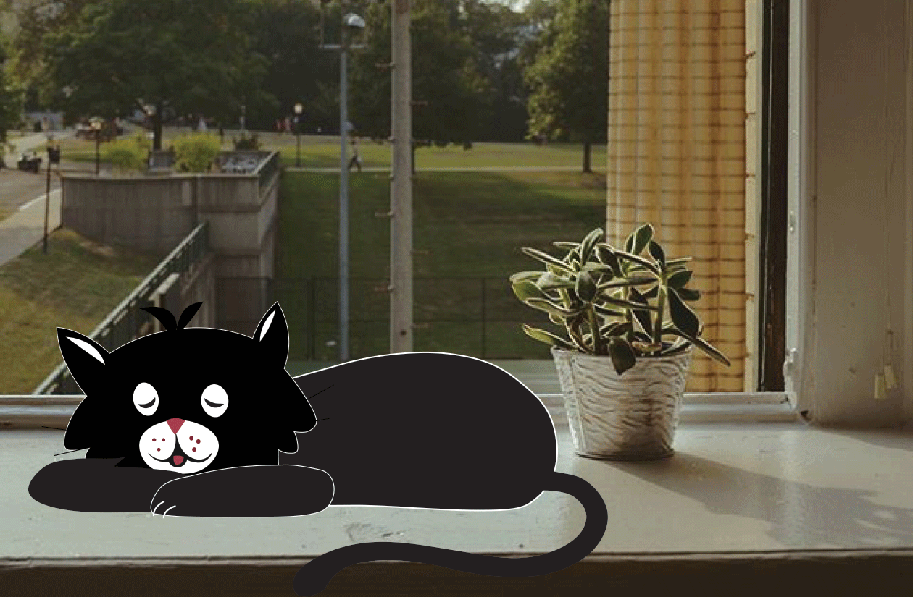
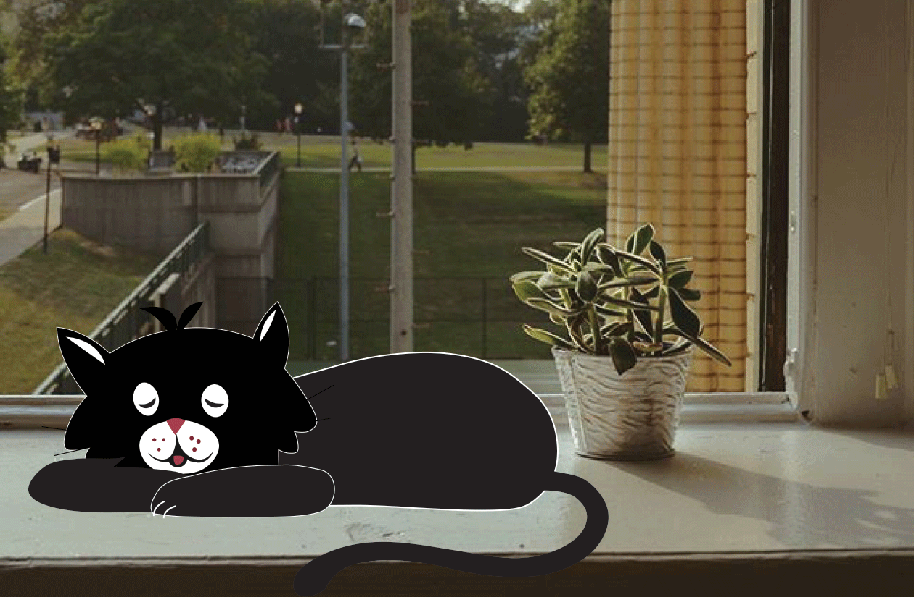
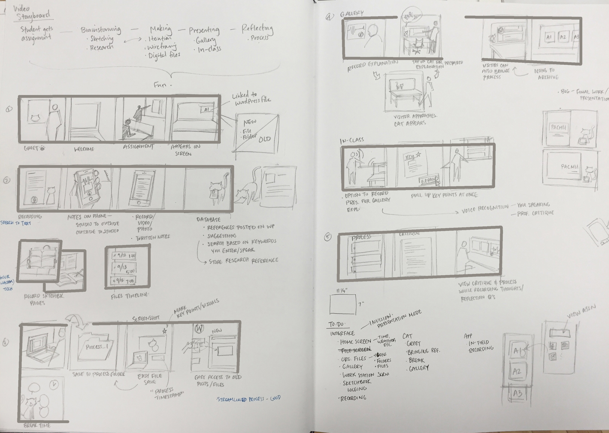

StudioCat
Challenge
Design a studio environment "of the future."
Outcome
StudioCat is a smart pet that exists in the studio for each design student to facilitate his or her design processes. We made a proof of concept to show the touch-, voice- and screen-based interactions supported in the studio environment.
Role & Contributions
Storyboarding
Prototyping
Graphics
Animation
Teammates
Lily Kim
Process
Concept Development
My partner and I were equally involved in the concept development process. As design students, we wanted to allow students to showcase their work in an engaging way to outsiders. Furthermore, because studio is an environment for both learning and working, we wanted our product to facilitate design processes by acting as a guide and helper at each step.
We chose to explore artificial intelligence because we wanted to see how a "smart" studio might improve students' work flows and even wellbeing. AI afforded nearly unlimited possibilities, but we learned that just because we could do something didn't mean we should. We wanted to determine how this pet could be helpful yet non-intrusive.
In the brainstorming process we thought about what kinds of platforms and technologies would make the studio space more helpful for busy, stressed-out students, exploring ideas for both work and play. These included:
- A mobile app
- Customization/personalization
- Easier control of the studio environment (temperature, lights, etc.)
- A class gallery of work
- Notification system from professors and peers
- A creative play platform
- A "roaming" pet (AR)
 

From feedback on our exploration, we could see that the cat's intended function was too confusing. We saw that we needed to select one clear design problem to solve, and refine a deeper solution to meaningfully enhance a student's working and learning environment.
We decided to explore an AR pet that exists for each student's personal studio space and tends to his or her needs. This gave us much more focus and a clearer narrative.
Production
Storyboard
These are my sketchbook pages where I wrote out StudioCat's functions so I wouldn't lose sight of them, and a storyboard for our concept video that would show off the main functions.
Assets
We demonstrated our design concept using "Wizard of Oz" techniques to spoof experience. Once they were designed, we learned to adjust our animations and screen interfaces for projection by using black backgrounds.
Learning Outcomes
- A proof-of-concept for a design studio enhanced by artificial intelligence and augmented reality
- Critical thinking and insight about how the environment impacts work habits, and about how outsiders view and engage with our work
- Appreciation for the respective values of high- and low-fidelity prototypes
Reflection
If I were to do this project again, I would begin with researching users in design studios and identifying a problem to address. Without a clear goal, we couldn't articulate the intended function of our early prototypes. Something else I learned was the value of quick and dirty prototypes. Refined prototypes have their place in the design process, but not as early as they appeared in ours. Instead, I would employ simple prototypes that captured the essence of each concept and devote more energy to understanding our user needs, as well as testing and iterating.